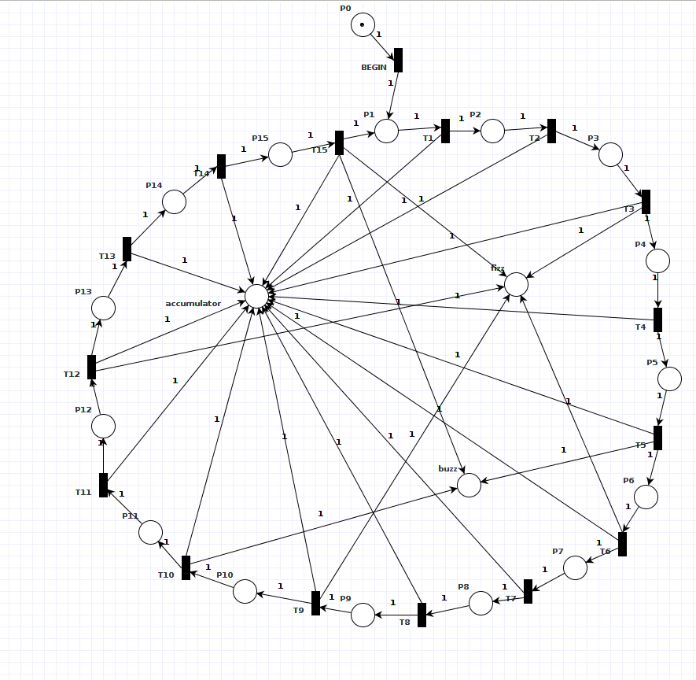

Petri-Net models can be used to generate a regular grammar, and can aid in the creation and design of a Domain specific language.
The generated grammar describes regular language
A regular language can be defined as a language recognized by a finite automaton.
The equivalence of regular expressions and finite automata is known as Kleene's theorem3
The benefits (and limitations) of DSL construction may not be immediately apparent.
However, there are several practical applications of using this technique to compose a protocol or language.
The obvious limitation is effort - find a way to demonstrate why that effort is well spent.
Petri-Nets represent a pure theoretical model for computation that machines and people can comprehend.
This allows the core rules of a grammar to be leveraged as an API for interaction with another higher level programming language.
Here is an attempt to model fizz-buzz
The outer ring of places and transitions represent a counter that counts from 1 to 15.
The inner places are 'accumulator', 'fizz', and 'buzz'
We model the essential logic of the problem by counting using the 'accumulator' place.
Whenever the token in the outer ring passes over 'T3', 'T6', 'T9', 'T12', and 'T15' the Petri-Net signals 'fizz' - by adding a token to the 'fizz' place.
Whenever the token passes over 'T5', 'T10', and 'T15' the Petri-Net signals 'buzz' - by adding a token to the 'fizz' place.
NOTE: on 'T15' - both 'fizz' and 'buzz' occur

This problem isn't very interesting as a language
'verbs': are just clock-ticks 'T1', 'T2'...
'nouns' : 'fizz', 'buzz', and 'accumulator' map to integer variables
So a valid sentence in fizz-buzz language will look like:
begin, T1, T2 ... T15, T1, T2 ...
Here the language is more useful
'verbs': correspond to moves in the game
'BEGIN' starts a game
'M[012][012]' takes a given move on on the gameboard
'M11' for example marks the center square (coordinates 1,1)
'nouns': 'turn_x' and 'turn_O' indiciate which turn in play
'NEW' desginates that the game has not started
A valid sentence in Tic-Tac-Toe Lang looks like:
begin, x10, o02, x22, o00, x20, o21, x12, o11, x01
Which is much more expressive - and useful as it can be used to play a game of Tic-Tac-Toe
The concepts discussed here have been explored during the course of development of the @bitwrap Eventstore.
With continued work on this project I hope to develop and release a set of tools that allows developers to more easily deal with the complexities that arise during DSL design and development.
You can follow along or contribute to our work by reviewing the reference implementation on github: https://github.com/bitwrap/bitwrap-io
or
Learn more by playing with an interactive Tic-Tac-Toe Demo here https://bitwrap.github.io/#octothorpe